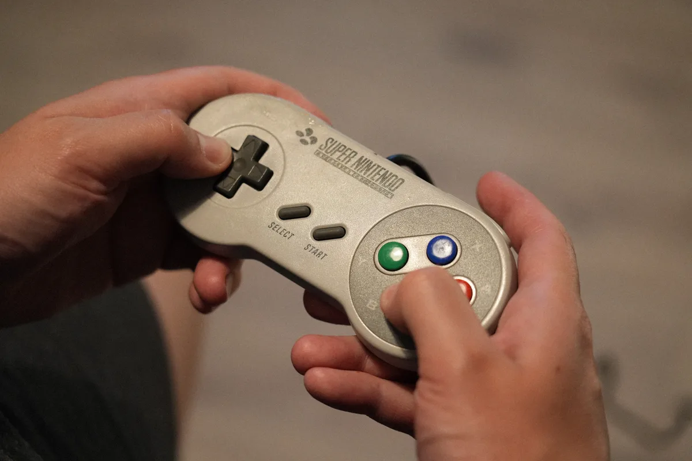
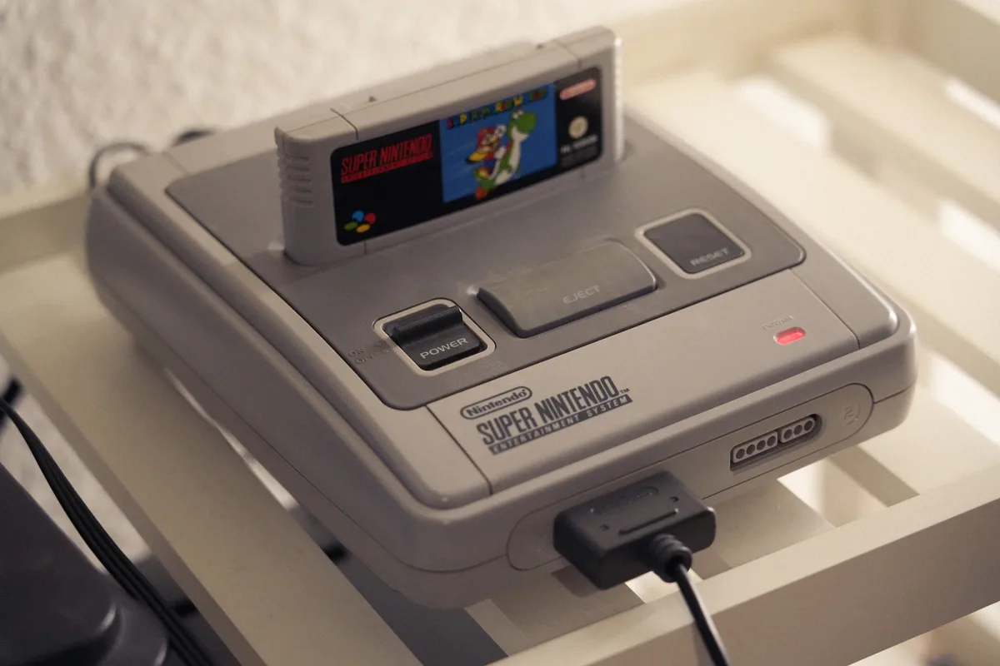
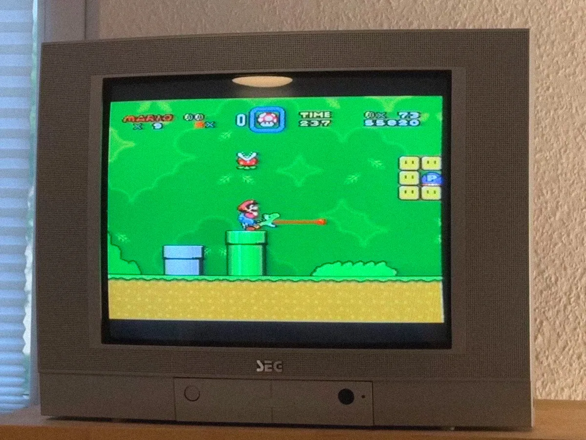
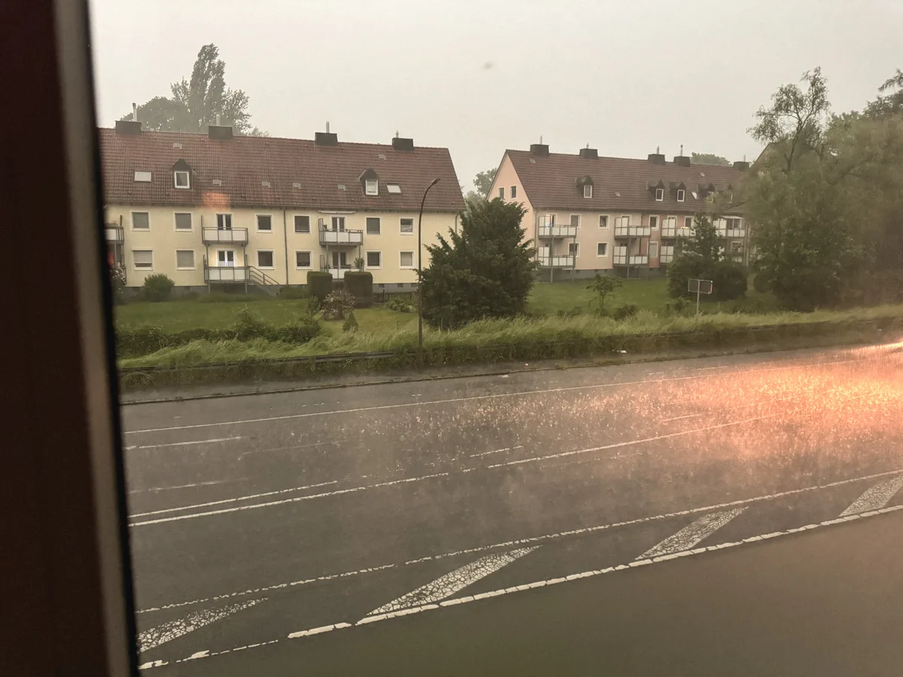
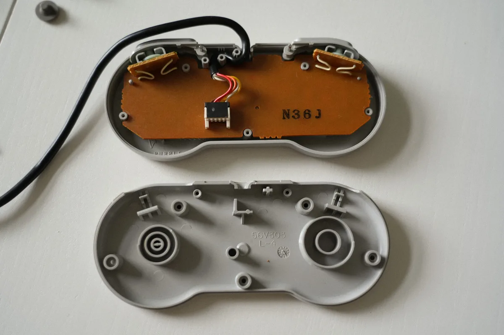
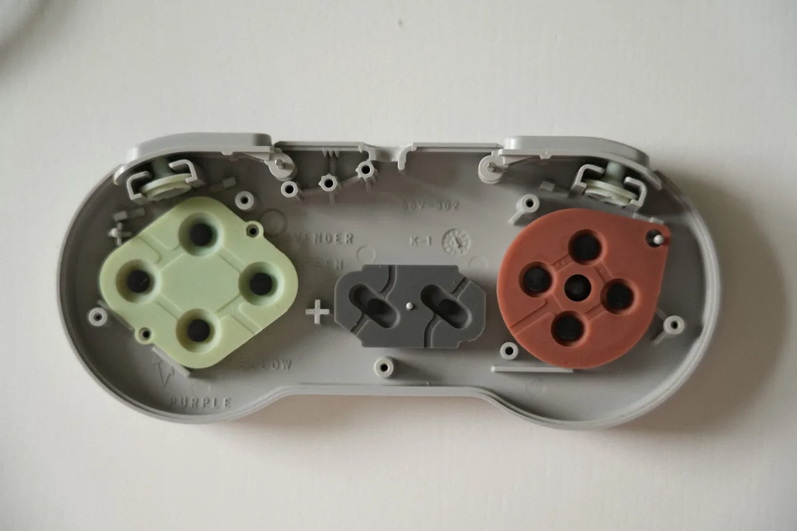
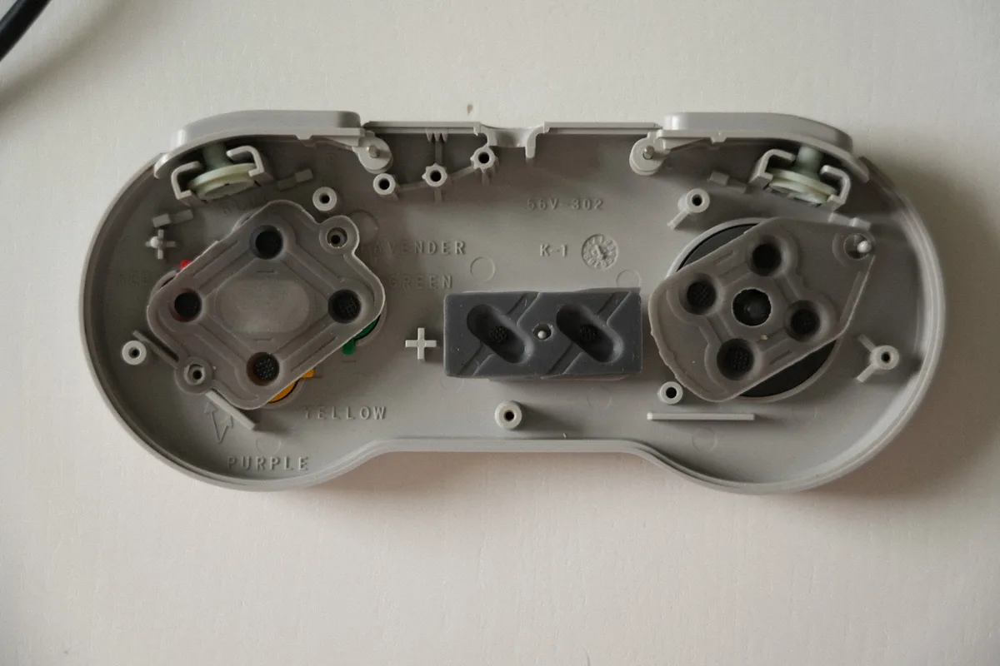
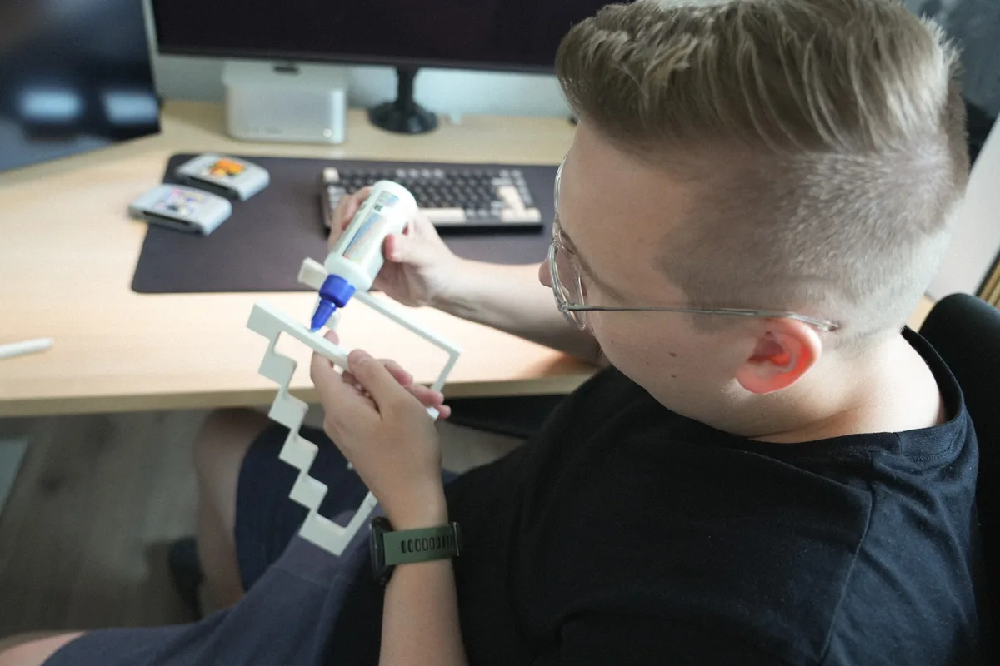
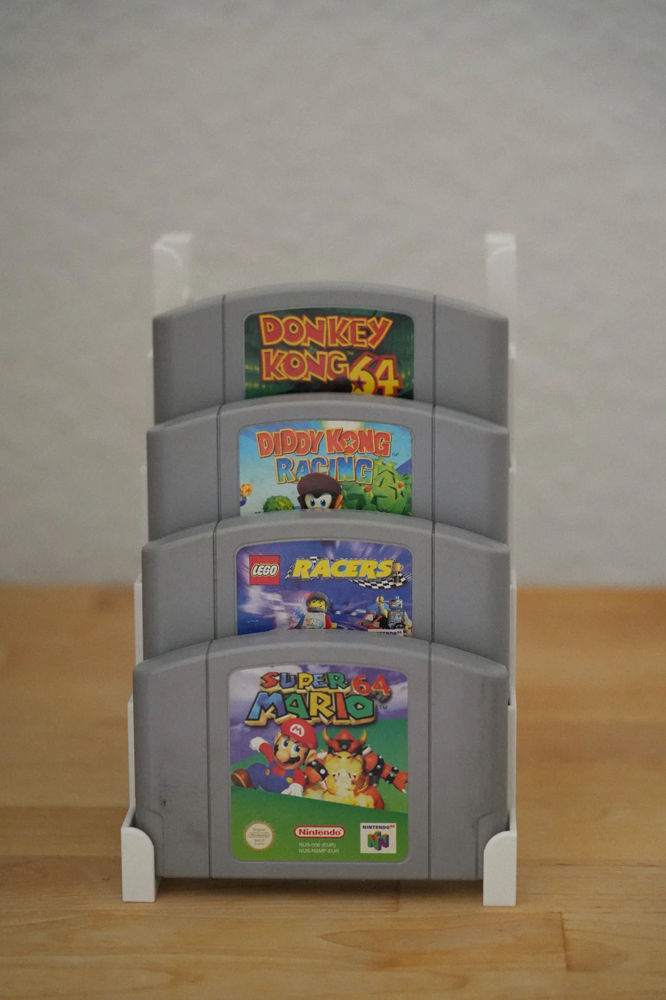

Als Kind hatte ich eine Super Nintendo und habe darauf pausenlos vor allem Super Mario World und Super Mario Kart gespielt. Neben Pokémon war mein Lieblingsspiel auf dem Gameboy Color definitv Looney Tunes. Wir hatten die PS1, die PS2 und die PSP. Ich bin mit Tony Hawk’s, Lego Racers, SSX und GTA aufgewachsen.
Die SNES, Hennings Nintendo 64 und unsere alte PS1 begleiten uns heute noch, standen aber nun schon lange nur dekorativ im Schrank. Auf dem großen Smart TV sehen Retrospiele einfach nicht schön aus, die Neuauflagen verfälschen aber irgendwie das Gefühl. Deshalb haben wir uns nun kurzerhand einen günstigen Röhrenfernseher über Kleinanzeigen gekauft.

Wir haben die SNES und die Nintendo 64 über Scart angeschlossen und das hat (fast direkt) richtig gut geklappt und wir konnten unsere Lieblingsspiele ausprobieren.



Das war vor allem bei dem Gewitter ein richtig entspanntes Gefühl. Auch wenn wir zwischendurch nicht sicher waren, ob das draußen Blitze waren oder wir einfach zu lange auf den Fernseher gestarrt haben und es deshalb so flackerte. Wir haben auf jeden Fall verstanden, warum man die Fernseher früher „Flimmerkiste“ nannte.

Super Mario World auf der SNES hat leider nicht so viel Spaß gemacht, weil der Controller sehr schwergängig war. Ich musste richtig feste drücken. Deshalb habe ich neue Gummis bestellt und den Controller auseinander geschraubt. Das war gar nicht so einfach, weil die Schrauben teilweise schon rund waren. Den zweiten Controller habe ich deshalb leider gar nicht auseinander bekommen, aber für Super Mario World reicht erst mal ein Controller.
Ihr wolltet bestimmt schon immer mal sehen, wie so ein Controller von innen aussieht:


Die Gummis habe ich dann ausgetauscht:

Das Gummi für das Steuerkreuz (rechts) liegt hier übrigens falsch herum auf. Beim Ausprobieren konnte ich damit nicht nach links laufen. Woran das lag, habe ich aber erst relativ spät festgestellt und den Controller bis dahin noch zwei mal auseinander und wieder zusammengeschraubt.
Für Hennings Nintendo 64 waren wir am Wochenende noch ein bisschen unterwegs. Er hat sich über Kleinanzeigen Donkey Kong 64 und Diddy Kong Racing gekauft. Die wurden auch direkt ausprobiert. Und da wir jetzt schon eine kleine Sammlung an N64 Spielen haben, hat Henning einen Ständer gedruckt und zusammengebastelt.

Das sieht finde ich schon richtig gut aus:

Und ich bin gespannt, wie es mit unserem neuen Hobby weitergeht.